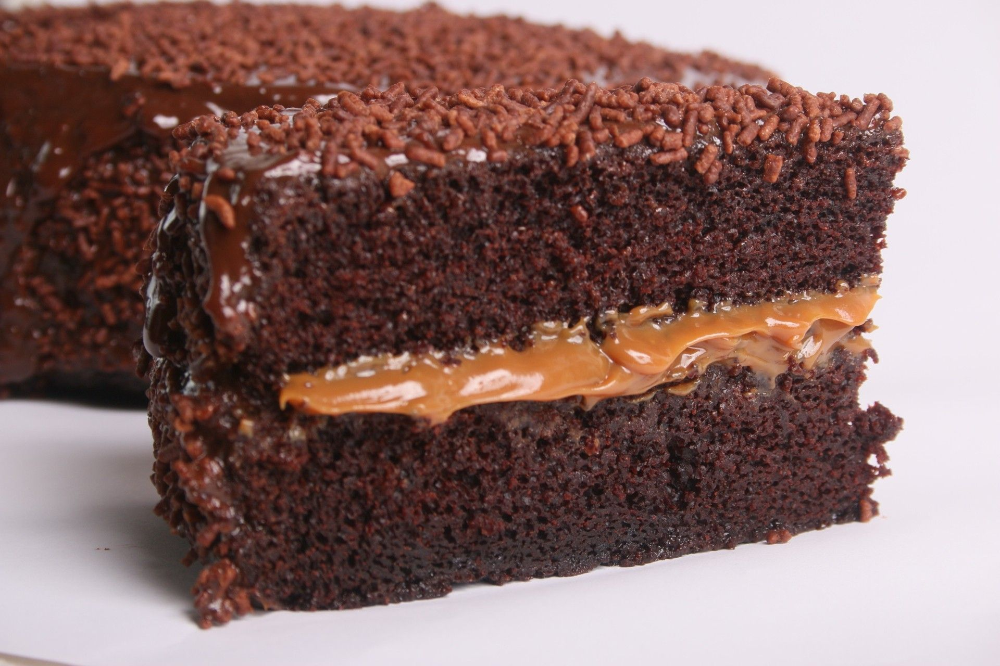
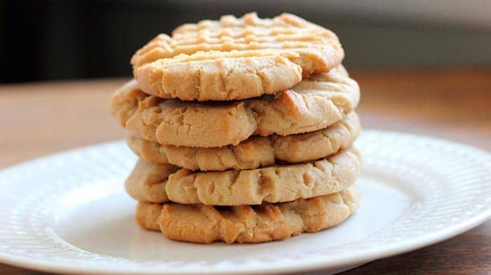
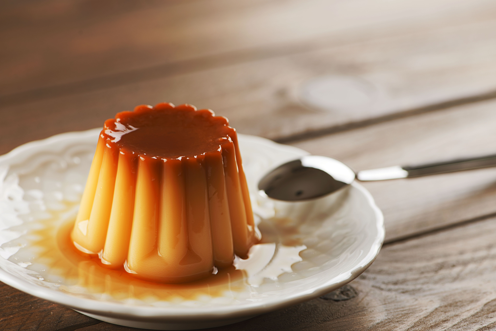

Ingredientes:
1 taza de harina
1 taza de azúcar
1/2 taza de cacao en polvo
1 cucharadita de polvo de hornear
1 cucharadita de bicarbonato de sodio
2 huevos
1 taza de agua caliente
Instrucciones:
Precalentar el horno a 180°C.
En un tazón grande, mezclar la harina, el azúcar, el cacao en polvo, el polvo de hornear y el
bicarbonato de sodio.
Agregar el aceite vegetal y los huevos, y mezclar bien.
Verter la mezcla en un molde para pastel engrasado.
Hornear durante 30-35 minutos, o hasta que al insertar un palillo en el centro del pastel, éste salga
limpio.

Ingredientes:
1/2 taza de mantequilla a temperatura ambiente
1/2 taza de azúcar
1 huevo
1 cucharadita de extracto de vainilla
1 1/2 tazas de harina
1/2 cucharadita de polvo para hornear
Instrucciones:
Mezcla la mantequilla y el azúcar hasta que estén suaves y esponjosos.
Agrega el huevo y la vainilla y mezcla bien.
Mezcla la harina, el polvo para hornear y la sal en otro tazón.
Agrega gradualmente la mezcla de harina a la mezcla de mantequilla, batiendo hasta que esté bien
combinada.
Forma bolas de masa del tamaño de una cucharada y colócalas en una bandeja para hornear.
Hornea las galletas durante 10-12 minutos a 180°C.

Ingredientes:
1 lata de leche condensada
1 lata de leche evaporada
4 huevos
1 cucharadita de esencia de vainilla
IInstrucciones:
Precalienta el horno a 180°C.
En un tazón grande, mezcla la leche condensada, la leche evaporada, los huevos y la esencia de vainilla
hasta que estén bien combinados.
Vierte la mezcla en un molde para flan previamente caramelizado.
Cubre el molde con papel aluminio y hornea durante aproximadamente 1 hora y 30 minutos, o hasta que el flan
esté listo (para verificar, inserta un cuchillo en el centro del flan, si sale limpio, está listo).